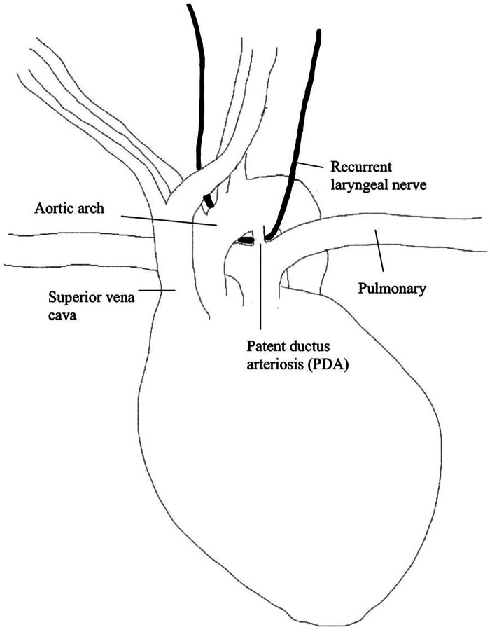
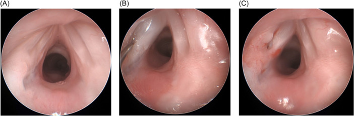
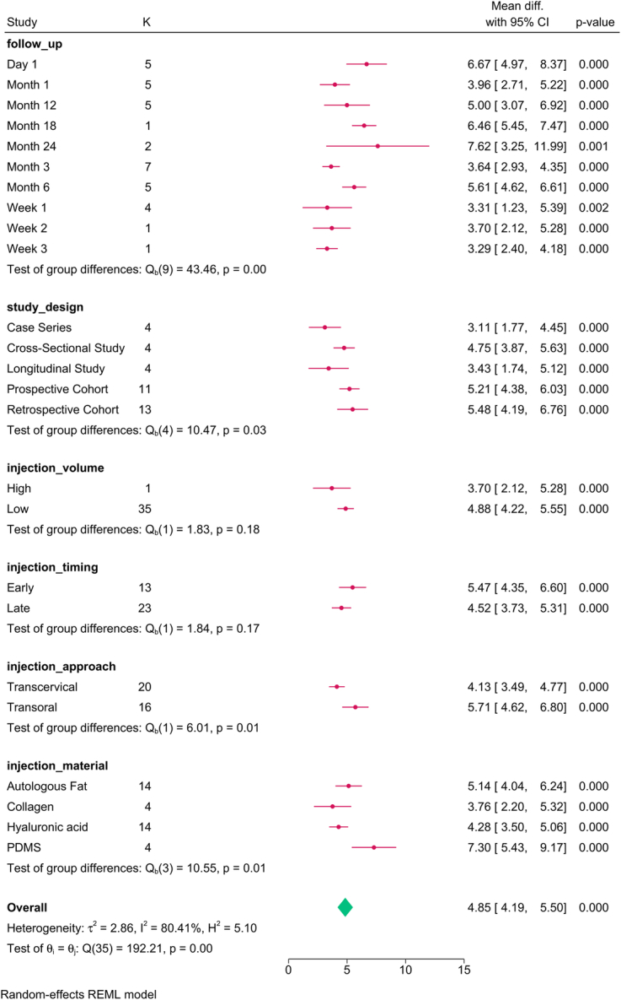
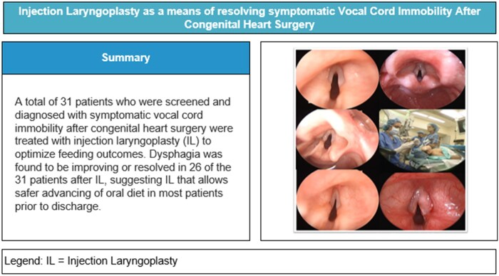

3070 — Tiêm chất làm đầy dây thanh & thyroplasty ở trẻ: chọn vật liệu, thể tích, thời điểm và khi nào chuyển phẫu thuật vĩnh viễn
Tags: pattern:bat-dong-day-thanh pattern:ho-thanh-mon pattern:hit-sac pattern:khac-giong vung:thanh-quan anatomy:thanh-quan protocol:noi-soi-thanh-quan protocol:FEES protocol:tiem-day-thanh protocol:thyroplasty score:PAS score:FOIS
Mức chắc chắn (certainty): tổng hợp y văn (literature synthesis) — ghép đoàn hệ 31 trẻ tiêm dây thanh sau mổ tim (Interdiscip Cardiovasc Thorac Surg 2026, PMC13215875), nghiên cứu bệnh–chứng 32 trẻ có nhóm chứng (OTO Open 2024, PMC11058695), tổng quan 3 lựa chọn phẫu thuật ở trẻ (Front Pediatr 2024, PMC11405229), tổng quan thực hành nhi (Otolaryngol Clin North Am 2026, PMC13546077), phân tích gộp 76 nghiên cứu tiêm dây thanh (Int J Surg 2024, PMC11573085) và phân tích gộp axit hyaluronic 32 nghiên cứu/1.917 ca (Cureus 2025, PMC12245398). Không có ca do nhóm tự chụp; không bài nào là thử nghiệm ngẫu nhiên ở trẻ.
Câu hỏi thực hành: bé gái 4 tháng tuổi (3,8 kg) mổ hẹp eo động mạch chủ, sau rút ống khàn + ho khi bú + thở rít thì hít vào nhẹ; nội soi mềm thấy dây thanh trái bất động. Câu hỏi: có tiêm dây thanh ngay không, tiêm chất gì, bao nhiêu mL, và nếu 6–12 tháng không hồi phục thì làm gì tiếp? Bài chốt bốn quyết định: (1) tiêm dây thanh là can thiệp TẠM THỜI để đóng khe thanh môn — hiệu quả chắc nhất trên NUỐT, không chắc trên tránh hít sặc; (2) vật liệu chọn theo tuổi: carboxymethylcellulose cho nhũ nhi, hyaluronic acid cho trẻ lớn hơn, canxi hydroxylapatite phải tránh ở nhũ nhi, mỡ tự thân cho liệt vĩnh viễn; (3) thể tích ở trẻ chỉ 0,1–0,6 mL, tiêm từng bước 0,05–0,1 mL, vì quá tay làm cứng dây thanh; (4) thyroplasty kiểu I gần như chỉ dành cho trẻ sau dậy thì — trước dậy thì implant di trú theo thanh quản lớn lên.
1. Tổng quan bệnh học – cơ chế hình ảnh: vì sao "đóng khe" là đích điều trị
- Vì sao liệt dây thanh gây hít sặc: đóng thanh môn là van cuối cùng bảo vệ đường thở trong thì nuốt. Khe hở làm mất lực cản, dịch đi qua thanh môn vào khí quản. Trong đoàn hệ trẻ sau mổ tim, hít sặc tăng 2,5 lần khi có bất động dây thanh; 87,5% trẻ bất động dây thanh có rối loạn giọng–nuốt, và 68,5–80,5% phải đổi độ đặc thức ăn hoặc nuôi ăn qua ống (PMC11058695).
- Vì sao khàn chứ không khó thở khi liệt MỘT bên: dây thanh liệt nằm trung gian, cơ nhẫn giáp sau (cơ DUY NHẤT mở dây thanh) mất chi phối, cơ khép không đối kháng → dây thanh bị kéo về giữa. Khe còn lại nhỏ nhưng vẫn đủ thở; cái mất là khép kín khi phát âm và khi nuốt. Vì vậy triệu chứng chính là khàn/giọng yếu ± sặc, không phải suy hô hấp (khác liệt HAI bên — xem bài 3068).
- Vì sao tiêm có tác dụng — vật lý của "mass effect": kim đưa vật liệu vào khoảng cạnh thanh môn (paraglottic space), tức phía ngoài lớp niêm mạc, đẩy cả bó cơ–niêm mạc vào trong. Không có "sửa thần kinh", chỉ thêm thể tích. Do đó hiệu quả phụ thuộc vị trí đặt (quá nông → bọng niêm mạc cản rung; quá sâu → không đẩy được dây thanh) và độ cứng của vật liệu (vật liệu cứng làm mất sóng niêm mạc).
- Vì sao vật liệu quyết định thời gian tác dụng: carboxymethylcellulose (CMC) là gel polysaccharide tan trong nước → tiêu nhanh; hyaluronic acid (HA) là glycosaminoglycan → tiêu trong vài tháng; canxi hydroxylapatite (CaHA) là hạt vi cầu được thực bào chậm → tồn tại lâu, tài liệu ghi nhận có thể > 5 năm; mỡ tự thân sống một phần theo "take" mạch máu nên bán vĩnh viễn và không đồng đều. Đây là lý do cùng một kỹ thuật nhưng "tuổi thọ" khác nhau 100 lần (PMC13546077).
- Vì sao thể tích phải nhỏ ở trẻ: thanh quản nhũ nhi chỉ bằng ~1/3 người lớn; các loạt nhi dùng 0,1–0,55 mL và 0,2–0,6 mL (PMC13546077). Ở người lớn, phân tích gộp 76 nghiên cứu cho thể tích trung bình 1,18 mL, 94,34% nghiên cứu dùng < 3 mL; và mỗi 1 mL tăng thêm làm thời gian phát âm tối đa (MPT) giảm 1,358 giây (p = 0,028) — bằng chứng định lượng rằng nhiều hơn không tốt hơn (PMC11573085).
- Vì sao trẻ khác người lớn về lựa chọn phẫu thuật: thyroplasty ở người lớn làm tỉnh để chỉnh giọng theo phản hồi; trẻ nhỏ phải mê toàn thân, thanh quản nhỏ khó đặt implant, và nam trước dậy thì có nguy cơ implant di trú khi thanh quản lớn lên → thyroplasty bị coi là kém phù hợp, chỉ an toàn ở nam sau dậy thì (PMC13546077).
- Con số nền: bất động dây thanh chiếm ~10% dị tật thanh quản bẩm sinh (đứng sau mềm sụn thanh quản); 27–78% là một bên, 22–73% hai bên; 36–47% vô căn; sau mổ tim, tỉ lệ tổn thương thần kinh quặt ngược được báo cáo 8–59%, và tới 77% ở mổ quai động mạch chủ sơ sinh (PMC13546077, PMC13215875).
- Vì sao bên TRÁI chiếm ưu thế: thần kinh quặt ngược trái vòng qua cung động mạch chủ – ống động mạch, nên mọi can thiệp vào vùng này (cắt ống động mạch, sửa quai) đều đặt thần kinh vào nguy cơ. Trong 89 trẻ bất động dây thanh, 83,6% ở bên trái (PMC12379859, dẫn qua bài 3068).
2. Mẫu hình + chẩn đoán phân biệt theo bên, theo thời gian và theo mục tiêu (Gamut)
- Theo BÊN:
- Một bên → khàn, giọng yếu, sặc khi bú; đích là đóng khe để nuốt an toàn và cải thiện giọng → tiêm dây thanh là lựa chọn đầu tay.
- Hai bên → rít thì hít vào, khó cai ống; đích là MỞ đường thở, không phải đóng khe → tiêm dây thanh không phải điều trị chính (làm hẹp thêm); xử trí theo bài 3068 (laterofixation, cắt dây thanh sau, mở khí quản).
- Theo THỜI GIAN dự kiến hồi phục: hồi phục tự nhiên 8–82% (tổng quan 320 ca PMC11049505; loạt 89 trẻ lớn nhất 28% — PMC12379859, cả hai dẫn qua bài 3068), trung vị vài tháng nhưng có ca > 12 tháng. Vì vậy can thiệp tạm hợp lý khi còn khả năng hồi phục; can thiệp vĩnh viễn chỉ đặt ra khi đã đủ thời gian theo dõi + điện cơ (EMG) không có tín hiệu.
- Theo MỤC TIÊU lâm sàng: (a) nuốt/hít sặc → ưu tiên đóng khe + phục hồi chức năng nuốt; (b) giọng → cân nhắc vật liệu bền hơn, tập giọng sau tiêm; (c) đường thở → không dùng tiêm đóng khe.
- Theo VẬT LIỆU (gamut thực hành):
- CMC gel (Prolaryn Gel) — nhũ nhi, mũi tiêm đầu, tác dụng ngắn, an toàn.
- HA gel (Juvederm) — trẻ lớn hơn hoặc mũi tiêm thứ hai trong năm đầu.
- CaHA (Prolaryn Plus) — tác dụng dài; tránh ở nhũ nhi, thận trọng vì có thể tồn tại nhiều năm.
- Màng bì acellular (Cymetra) — lựa chọn khác, tác dụng trung bình.
- Mỡ tự thân — liệt vĩnh viễn, bán vĩnh viễn, không phí tổn vật liệu.
- Polydimethylsiloxane (PDMS) và Teflon — Teflon không còn dùng ở trẻ (u hạt, không hồi phục); PDMS chủ yếu ở người lớn.
- Theo CĂN NGUYÊN (gamut của bất động dây thanh trẻ): sau mổ tim/quai động mạch chủ (hay gặp nhất) · sau đặt nội khí quản · thần kinh trung ương (Arnold–Chiari) · bẩm sinh/hội chứng · chấn thương · vô căn.
3. Bảng so sánh phân biệt (ma trận đối chiếu)
| Thực thể (entity) | Hình ảnh/nội soi điển hình | Chốt vào (rule-in) | Chốt loại (rule-out) | Gợi ý xác nhận |
|---|---|---|---|---|
| Tiêm dây thanh tạm (CMC/HA) | Nội soi: dây thanh bất động + khe hở thì phát âm; sau tiêm thấy khối đẩy dây thanh vào giữa, niêm mạc phủ trên | Khe hở còn đóng được bằng đẩy thể tích + còn tiềm năng hồi phục | Liệt HAI bên có rít/tắc đường thở → tiêm làm hẹp thêm, không dùng | Nội soi treo + tiêm, đánh giá đóng khe ngay trên bàn; FEES/VFSS trước–sau |
| Thyroplasty kiểu I (Gore-Tex) | Nội soi: dây thanh được đẩy vào ở mức thanh môn, không có bọng niêm mạc; CT có implant cạnh sụn giáp | Trẻ sau dậy thì, liệt vĩnh viễn, không muốn vật liệu tiêu | Trước dậy thì / thanh quản còn lớn → nguy cơ di trú implant | Nội soi tỉnh (nếu hợp tác) hoặc mê; CT thanh quản nếu nghi di trú |
| Tái chi phối thần kinh quặt ngược (ansa cervicalis → RLN) | Không có "khối" trên nội soi; dây thanh teo cơ giảm dần, căng dần sau 3–6 tháng | EMG không có tín hiệu + liệt vĩnh viễn + thanh quản còn nguyên khung | Có tín hiệu EMG còn lại → không cần tái chi phối | EMG thanh quản sau ≥ 3–4 tuần; theo dõi giọng 6–12 tháng |
| Tiêm mỡ tự thân | Khối mỡ không đều, có thể tiêu một phần; nội soi thấy đẩy vào nhưng bờ không nhẵn | Liệt vĩnh viễn, cần bền, không có vật liệu tổng hợp | Cần chỉnh chính xác cao / mô mỏng → dễ quá tay | Theo dõi 3–6 tháng; siêu âm/CT nếu cần |
| Hẹp thanh môn sau (PGS) — bắt chước liệt | Dây thanh không di động nhưng KHÔNG liệt; sờ khớp nhẫn phễu cố định khi nội soi treo | Khớp cố định khi sờ + tiền sử đặt ống/mổ | Khớp còn lay động → liệt thật | Nội soi treo sờ khớp; EMG (PGS có tín hiệu) |
| U/mô mềm che khe (u máu dưới thanh môn, u nhú) | Khối trong lòng, không phải bất động cơ; bất đối xứng, có mạch máu | Khối choán chỗ thấy rõ, dây thanh còn di động | Dây thanh bất động đối xứng, không khối | Nội soi ống mềm/treo; MRI nếu u máu lớn |
- Ảnh đối chiếu: Hình giải phẫu ống động mạch – thần kinh quặt ngược (PMC11405229-F1) và nội soi trước/trong/sau tiêm (PMC11058695-F1) được dùng ở mục 6 (quiz) để người đọc tự đọc trước khi mở đáp án.
4. Protocol chụp/đánh giá + hệ phân độ & quyết định điều trị
- Đánh giá trước can thiệp (bắt buộc đủ 3 tầng):
- Nội soi ống mềm (gold standard) xác định bên, tư thế, và loại trừ PGS; đánh giá niêm mạc, u, phù.
- Siêu âm thanh quản hỗ trợ sàng lọc/giường bệnh: gộp Se 91%/Sp 97% nhưng phụ thuộc người làm — trong 29 trẻ được làm cả hai, 21 ca khớp, 8 ca lệch (7 ca siêu âm bỏ sót) (PMC13215875). Vì vậy không dùng siêu âm để loại trừ khi lâm sàng nghi.
- Đánh giá nuốt bằng FEES hoặc VFSS, ghi PAS (Penetration–Aspiration Scale 1–8) và FOIS (1–7); đây là thước đo kết cục, không phải thủ tục hình thức.
- Chỉ định tiêm dây thanh ở trẻ (đồng thuận thực hành từ các loạt trên):
- Liệt một bên + hít sặc có bằng chứng trên FEES/VFSS hoặc khàn ảnh hưởng bú/ăn, trong giai đoạn còn khả năng hồi phục.
- Không dùng cho liệt hai bên có tắc đường thở; không thay thế mở khí quản khi có suy hô hấp.
- Chọn vật liệu theo tuổi (bảng thực hành):
| Nhóm tuổi / tình huống | Vật liệu ưu tiên | Thể tích khởi đầu | Ghi chú |
|---|---|---|---|
| Nhũ nhi (< 12 tháng), mũi đầu | CMC gel | 0,1–0,2 mL, tăng 0,05–0,1 mL | Tan nhanh → an toàn nếu quá tay; không cần chỉnh sau |
| Trẻ 1–5 tuổi, cần dài hơn | HA gel | 0,2–0,4 mL | Tránh tiêm quá nông gây bọng niêm mạc |
| Trẻ lớn, liệt kéo dài | HA hoặc mỡ tự thân | 0,3–0,6 mL | Mỡ cần lấy ở đùi/bụng, lượng 0,5–1 mL để lọc |
| Liệt vĩnh viễn, sau dậy thì | Thyroplasty I hoặc tái chi phối | — | Thyroplasty ở trẻ trước dậy thì: tránh |
| Bất kỳ tuổi, da/mô mỏng | Tránh CaHA | — | Nguy cơ hạt, cứng, tồn tại > 5 năm |
- Kỹ thuật: nội soi treo + ống nội khí quản nhỏ (hoặc thông khí ống mềm), tiêm qua đường miệng vào 1/3 giữa dây thanh, hướng kim ra ngoài để tránh vào lớp niêm; kiểm tra đóng khe thì phát âm ngay trên bàn; rút ống khi tỉnh, theo dõi 2–4 giờ (stridor, co kéo, SpO₂).
- Biến chứng đã báo cáo: trong 31 trẻ, 22,6% có biến cố nhưng đều ngắn, tự khỏi: thở rít (5), tăng công thở (2), suy tim (1), nhiễm khuẩn huyết (1); không ca nào cần tiêm lại trong theo dõi (PMC13215875). Trong 32 trẻ bệnh–chứng: 0 biến chứng, không laryngospasm, không đặt lại ống trong 30 ngày (PMC11058695).
- Kết cục định lượng để tư vấn: đoàn hệ 31 trẻ — 83,9% cải thiện nuốt (PAS/FOIS), 61,3% xuất viện ăn hoàn toàn bằng miệng, 12,9% cần mở dạ dày, 48,4% hồi phục dây thanh hoàn toàn sau trung vị 119 ngày, thời gian ăn hoàn toàn bằng miệng sau tiêm 8 ngày (5–16) (PMC13215875).
- Phản biện quan trọng: nghiên cứu có nhóm chứng (17 tiêm vs 15 theo dõi) cho thấy hít sặc thanh thực quản hết ở 82% vs 60% (p = 0,24 — không có ý nghĩa), thời gian hồi phục ghi nhận 47,4 vs 9,6 tháng (p < 0,001, do lịch chụp khác nhau). Tức tiêm không chứng minh được lợi ích vượt hồi phục tự nhiên ở quần thể nhỏ này; chỉ định phải dựa trên mức nặng của sặc + nguy cơ hít sặc tái diễn, không phải "tiêm cho chắc" (PMC11058695).
- Sơ đồ quyết định:
flowchart TD
A[Trẻ bất động dây thanh một bên sau mổ tim] --> B{Nội soi: một bên hay hai bên?}
B -->|Hai bên| C[Đường thở: laterofixation / cắt dây thanh sau / mở khí quản — bài 3068]
B -->|Một bên| D{FEES/VFSS: có hít sặc hoặc khàn ảnh hưởng bú?}
D -->|Không| E[Theo dõi + tập nuốt/giọng, đánh giá lại 4–8 tuần]
D -->|Có| F{Còn khả năng hồi phục? < 6–12 tháng}
F -->|Có| G[Tiêm dây thanh: CMC nếu < 12 tháng, HA nếu lớn hơn]
F -->|Không| H{EMG còn tín hiệu?}
H -->|Có| G
H -->|Không| I{Đã dậy thì?}
I -->|Chưa| J[Tái chi phối RLN hoặc tiêm mỡ tự thân]
I -->|Rồi| K[Thyroplasty kiểu I hoặc tái chi phối]
5. Biến thể bình thường và cạm bẫy
- Bất động do đau/co thắt sau ống — không phải liệt thần kinh: nội soi thấy dây thanh còn lay động khi gây mê sâu, EMG có tín hiệu → không tiêm.
- PGS (hẹp thanh môn sau) bị gọi là liệt: dây thanh không di động nhưng khớp nhẫn phễu cố định; tiêm dây thanh không sửa được PGS và làm hẹp thêm đường thở.
- Siêu âm bình thường không loại trừ: 7/29 ca siêu âm bỏ sót so với nội soi (PMC13215875). Ở trẻ < 3 tuổi, nội soi mềm cũng có thể không đạt tới 20% (dẫn qua bài 3068) → cần nội soi treo khi nghi cao.
- Tiêm quá tay: khối quá lớn làm cứng dây thanh, mất sóng niêm mạc, giọng xấu hơn dù khe đã đóng; người lớn cho thấy mỗi 1 mL thêm làm MPT giảm 1,358 giây (PMC11573085). Ở trẻ, 0,05–0,1 mL đã tạo khác biệt.
- Tiêm quá nông: tạo bọng niêm mạc cản rung, giọng rè; nhìn thấy trên nội soi ngay sau tiêm.
- CaHA ở nhũ nhi: hạt tồn tại lâu, có thể gây hạt/cứng/di trú, và không thể "rút lại" — tài liệu khuyến cáo tránh ở trẻ nhỏ, chống chỉ định ở nhũ nhi (PMC13546077).
- Thyroplasty trước dậy thì: implant di trú theo thanh quản lớn lên, có thể ăn mòn sụn; không làm ở nam trước dậy thì.
- Sai lầm "tiêm để chống sặc" mà không đánh giá nuốt: tiêm không thay thế tập nuốt, đổi độ đặc, kiểm soát trào ngược; và bằng chứng có nhóm chứng không cho thấy giảm sặc rõ (82% vs 60%, p = 0,24).
- Bỏ sót liệt hai bên: nếu chỉ thấy một bên trên ống mềm mà trẻ rít nhiều, khó cai ống, phải nội soi treo kiểm tra bên còn lại trước khi tiêm.
6. Tự lượng giá — Blind Quiz ngay trên trang tĩnh
Ca 1 — Vì sao bên trái?

- Gợi ý lâm sàng: sơ đồ giải phẫu dùng để giải thích vì sao mổ cắt ống động mạch hay gây liệt dây thanh trái.
- Câu hỏi: Thần kinh nào bị tổn thương? Vì sao bên trái gặp nhiều hơn bên phải? Cấu trúc nào là mốc nguy cơ?
Bấm để hiện đáp án (findings + chẩn đoán)
- Dấu hiệu: sơ đồ vẽ cung động mạch chủ, ống động mạch (PDA) và thần kinh quặt ngược vòng quanh vùng cung–PDA.
- Chẩn đoán: liệt dây thanh trái do tổn thương thần kinh quặt ngược trái trong mổ vùng cung động mạch chủ/PDA. Bên trái vòng qua ống động mạch, đường đi dài hơn và nằm trong lồng ngực → dễ bị kẹp/nhiệt/cắt.
- Nguồn ảnh: Front Pediatr 2024, PMCID PMC11405229, Figure 1 — CC BY 4.0.
Ca 2 — Nội soi trước, trong và sau tiêm

- Gợi ý lâm sàng: bé trai 6 tháng, sau mổ hẹp eo động mạch chủ, khàn và sặc khi bú; hình (A)–(C) là nội soi thanh quản.
- Câu hỏi: Mô tả vị trí/khe hở ở (A). (B) đang làm gì? (C) đã đạt mục tiêu chưa, và dấu hiệu nào cho biết?
Bấm để hiện đáp án (findings + chẩn đoán)
- Dấu hiệu: (A) dây thanh trái bất động, khe hở thì phát âm; (B) kim đưa vật liệu vào khoảng cạnh thanh môn; (C) dây thanh trái được đẩy vào giữa, khe thu hẹp, niêm mạc phủ đều (không bọng nông).
- Chẩn đoán: bất động dây thanh trái sau mổ tim, điều trị bằng tiêm CMC gel để đóng khe — mục tiêu là bảo vệ đường thở khi nuốt, không phải sửa thần kinh.
- Nguồn ảnh: OTO Open 2024, PMCID PMC11058695, Figure 1 — CC BY-NC-ND 4.0 (nguyên bản).
Ca 3 — Đọc biểu đồ quyết định vật liệu/thời điểm

- Gợi ý lâm sàng: biểu đồ gộp 76 nghiên cứu tiêm dây thanh (chủ yếu người lớn), kết cục là thời gian phát âm tối đa (MPT).
- Câu hỏi: Nhóm nào cải thiện MPT nhiều nhất? Thể tích thấp (< 3 mL) so với cao (≥ 3 mL) khác nhau thế nào? Điều này có ích gì khi chọn thể tích cho trẻ?
Bấm để hiện đáp án (findings + chẩn đoán)
- Dấu hiệu: đường vào qua miệng (transoral) và PDMS cải thiện MPT nhiều nhất; nhóm thể tích thấp có MD 4,88 so với 3,70 ở nhóm thể tích cao; khác biệt giữa hai nhóm không có ý nghĩa (p = 0,18).
- Chẩn đoán/ý nghĩa: không có lợi ích từ thể tích lớn; ngược lại mỗi mL tăng thêm làm MPT giảm 1,358 giây. Ở trẻ, nguyên tắc là liều nhỏ, tăng dần, đánh giá lại sau mỗi 0,05–0,1 mL.
- Nguồn ảnh: Int J Surg 2024, PMCID PMC11573085, Figure 2 — CC BY 4.0.
Ca 4 — Kết cục thực tế của một chương trình tiêm ở trẻ

- Gợi ý lâm sàng: 140 trẻ sau mổ tim được sàng lọc; 70 trẻ (50%) có bất động dây thanh; 31 trẻ được tiêm trước xuất viện.
- Câu hỏi: Bao nhiêu trẻ cải thiện nuốt? Bao nhiêu ăn hoàn toàn bằng miệng khi ra viện? Có ca nào phải tiêm lại không?
Bấm để hiện đáp án (findings + chẩn đoán)
- Dấu hiệu: 26/31 (83,9%) cải thiện PAS/FOIS; 19 (61,3%) ăn hoàn toàn bằng miệng khi ra viện; 4 (12,9%) cần mở dạ dày; không ca nào tiêm lại; hồi phục dây thanh 48,4% sau trung vị 119 ngày.
- Chẩn đoán: tiêm dây thanh là cầu nối nuốt an toàn, hiệu quả rõ trên chức năng nuốt, không phải "chữa liệt".
- Nguồn ảnh: Interdiscip Cardiovasc Thorac Surg 2026, PMCID PMC13215875, Figure 1 — CC BY 4.0.
Bài liên quan chéo
- 3068 – Liệt dây thanh sau mổ đường thở ở trẻ: một bên vs hai bên
- 3047 – Hẹp khí quản sau đặt nội khí quản ở trẻ
- 3049 – Hẹp thanh–khí quản tái phát sau tạo hình
- 6100 – Chăm sóc và cai ống mở khí quản ở trẻ
- 3005 – U máu dưới thanh môn ở nhũ nhi
- 602 – Tracheobronchomalacia ở trẻ
Không dùng để chẩn đoán độc lập khi chưa có người hướng dẫn.